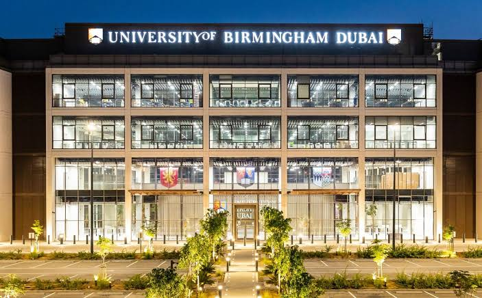

Venue & travel
University of Birmingham Dubai
Dubai International Academic City, Dubai, United Arab Emirates.

Address
University of Birmingham Dubai
Dubai International Academic City
PO Box 341799
Dubai, UAE
By car
The campus is approximately 20–30 minutes from Dubai International Airport and Downtown Dubai, depending on traffic.
Public transport
The University’s campus directions page lists bus routes 366 and 320, as well as taxi. The metro does not currently extend to Dubai International Academic City.
Parking
The campus has 550 parking spaces managed by Campus Services.
On campus
Conference rooms
The programme uses four main spaces across the day.
AuditoriumInnovation LoungeHarvard Lecture TheatreAtrium
Travel information is based on the current University of Birmingham Dubai campus directions page. Always allow additional time for Dubai traffic.